診所系統使用手冊
給醫師與櫃台：按下每一顆按鈕之後，系統在背後會自動做哪些事。很多事情是連鎖發生的，例如送交櫃台時藥單就進了待包藥、勾「上傳影像」就多一筆待辦、取消報到時病歷日誌會暫時拿掉。知道這些，就不會在畫面上找不到東西。
00怎麼看這份手冊
- 每一節照「你做什麼 → 系統自動做什麼 → 要注意」排。系統自動做的事用橘色底標出來。
- 截圖上的1橘色數字，對應圖片下方同一個號碼的說明。
- 截圖用的是虛構的示範資料（貓咪、飼主、電話都是編的），時間是某一天下午 3:10。
- 按鈕名稱寫成 這樣，跟畫面上的字一樣。
01一天的流程
一隻貓從掛號到離開，經過五個步驟。上面兩列是人要做的，最下面一列是系統同時自動做的。
最重要的一個觀念：看診資料只有一份
體重、體溫、檢驗數值、本次簡易紀錄、請轉告飼主、回診建議，全部只存在「這次看診」上。病歷日誌、健檢報告草稿都不是另外複製一份，而是打開時直接讀這次看診。所以在任何一個地方改，其他地方都會跟著變。
診療台
醫師寫紀錄、藥單、量測
櫃台處理視窗
櫃台看、補紀錄、勾上傳影像
這次看診
唯一的一份：量測、檢驗數值、紀錄、藥單、轉告、回診建議
病歷日誌
從日誌「修改」＝改這次看診
健檢報告草稿
體重、體溫、檢驗數值在報告上改＝改這次看診。結案那一刻才凍結成報告自己的內容
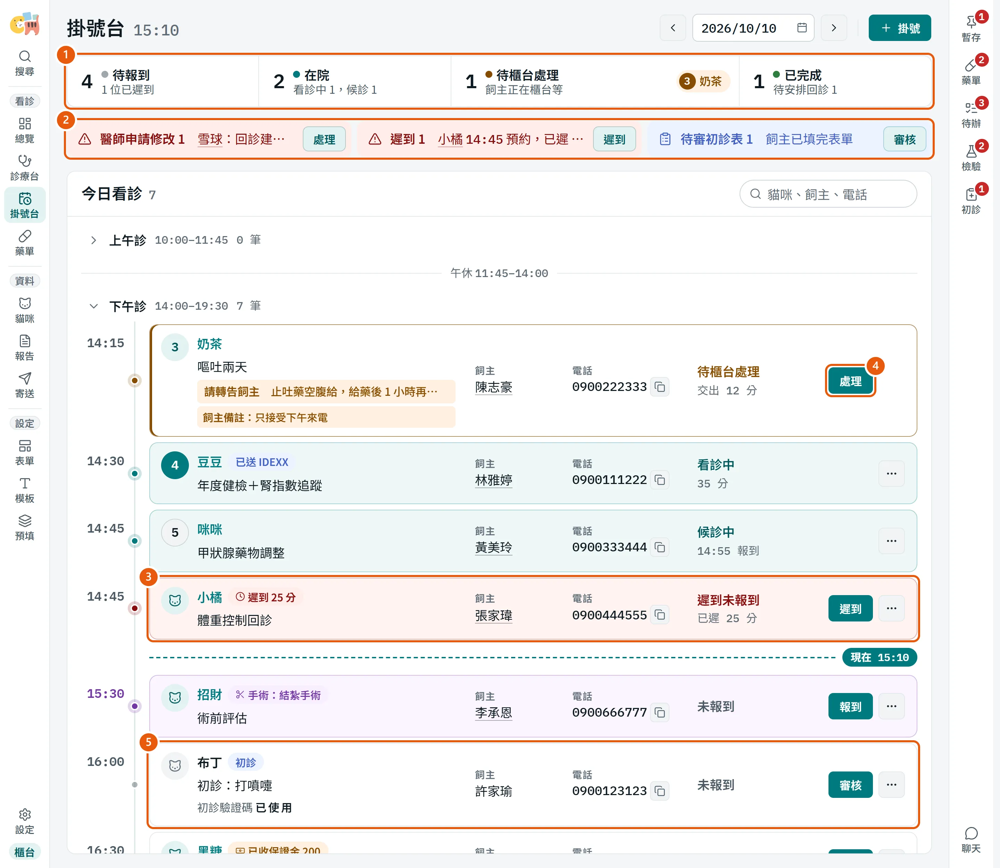
- 1流程列：待報到、在院、待櫃台處理、已完成各幾筆。點一格只看那一段，再點一次取消。
- 2警示列：有例外才出現，例如醫師申請修改、遲到還沒報到、飼主填好初診表等審核。
- 3過了預約時間 5 分鐘還沒報到：卡片變紅、按鈕變成 遲到。
- 4醫師已送交櫃台：按 處理 打開櫃台處理視窗。
- 5初診：飼主已經用驗證碼填好初診表，按 審核。
02掛號
掛號台右上角 掛號。電話裡說「明天帶來」也可以先掛，選別天就好。
- 回診：打貓咪名、飼主姓名或電話找貓。初診：填貓咪名字與電話就好，飼主姓名可以先空著。
- 選日期、預估診療時間、時段。時段 15 分鐘一格，格子裡寫著已經約的貓；跟別人重疊只會提醒，不會擋。已經過去的時段也能選（現場補登用）。
- 手術只是一個標記（勾「手術」並寫名稱），沒有專屬時段。
- 選了貓，下面出現出席紀錄：這隻貓、以及飼主名下所有貓的遲到與未到次數。
- 這隻貓需要收保證金時，出現保證金欄位，沒選不能掛號。
- 初診會產生一組 4 位數的初診驗證碼（見下一節）。
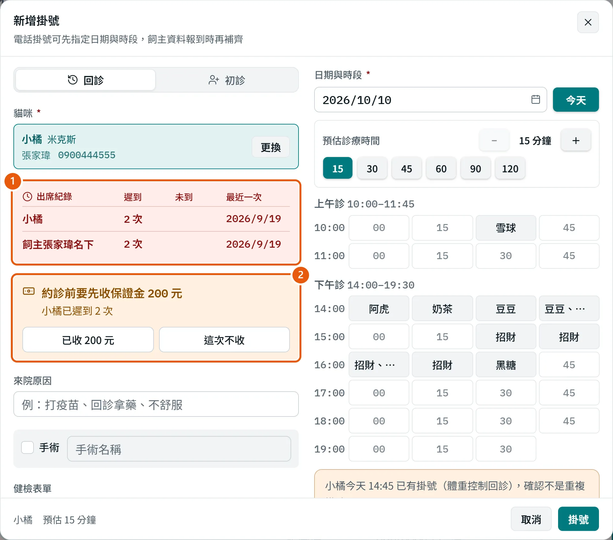
- 1出席紀錄：上面一列只算這隻貓，下面一列是飼主名下所有貓。
- 2保證金：選 已收 200 元 或 這次不收（不收要寫原因）。
保證金的規則
- 一隻貓從上次收保證金之後，遲到滿 2 次或未到滿 1 次，下次約診就要先收 200 元。只看這隻貓自己，同一位飼主的另一隻貓分開算。
- 選「已收」：次數歸零重新算。選「這次不收」：次數不歸零，下次約診還會再問。
- 取消一筆已收保證金的掛號時，要選這筆錢的去向：先留著，下次沿用 下次約診自動沿用、不用再收；已退還 下次約診照樣要收。
- 已收的掛號在卡片與櫃台處理視窗上標著「已收保證金 200」，提醒結帳時處理。看完診之後的退還或抵扣，系統不記錄。
- 收錯或漏記：到貓咪頁的「出席紀錄」，每一列右邊的鉛筆可以改那筆的保證金紀錄。
遲到與未到怎麼算
- 報到時超過預約時間 5 分鐘，系統自動記一次遲到（櫃台手動記的遲到不論幾分鐘都算）。
- 標記未到 記一次未到。
- 取消掛號會列在出席紀錄上（看得到取消時間與原因），但不算次數。取消報到不留紀錄。
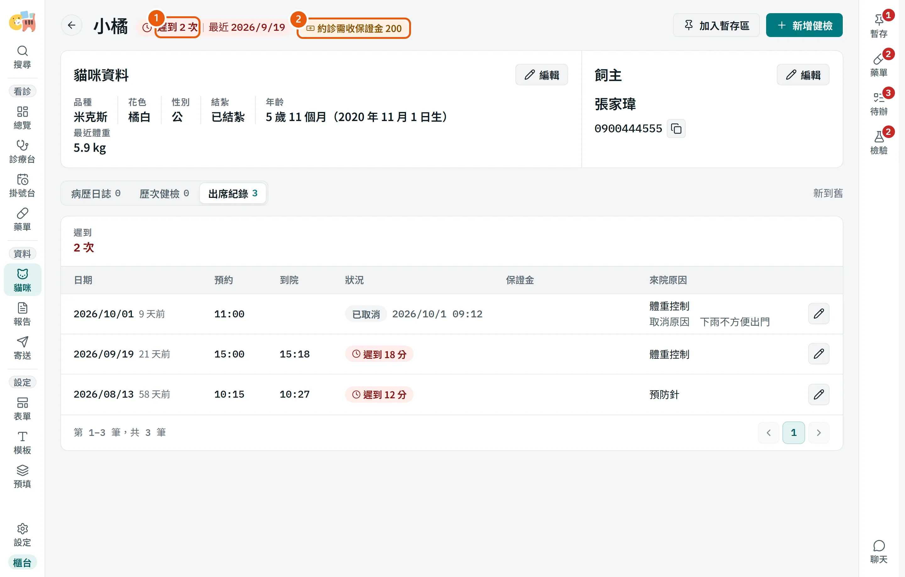
- 1頁首的遲到、未到次數，點一下切到這個頁籤。
- 2這隻貓現在約診要先收保證金。
03初診
第一次來的貓，飼主在診所用自己的手機填初診表，櫃台審核後才建立正式的飼主與貓咪資料。
掛初診 → 把卡片上的 4 位數驗證碼給飼主。驗證碼在預約時間 24 小時後失效；右側工具欄 初診 的「已發出」頁籤可以查、複製、作廢。
飼主送出後：掛號台出現「待審初診表」、那張卡片的按鈕變成 審核、工具欄「初診」出現紅色數字。
- 逐欄看過，填錯的地方每一段都能 修改。
- 確認掛號日期與時段 → 掛號：建立飼主與貓咪的正式資料。
- 退回：不建立資料，掛號回到「等飼主填初診表」；驗證碼還沒過期的話，飼主可以用同一組重填。
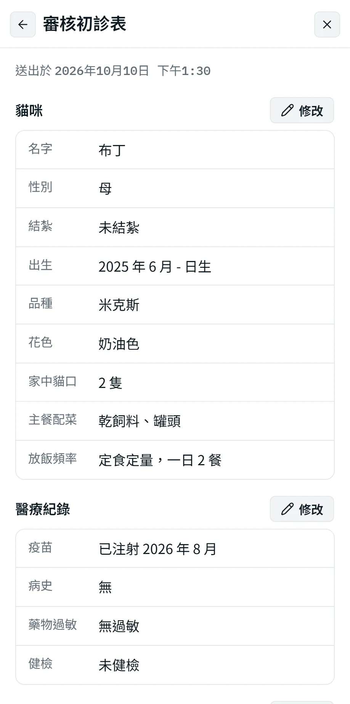
04報到
- 貓到了，按卡片上的 報到（遲到的會顯示 遲到）。只能替今天的掛號報到。
- 要改到院時間或號碼牌：卡片的 ⋯ → 報到（改到院時間／號碼牌）。
- 按錯了：提示上的 復原，或卡片 ⋯ → 取消報到（醫師還沒開始看診才行）。
- 配一張號碼牌、記下到院時間；超過預約 5 分鐘記一次遲到。
- 用掛號時選的健檢表單建立健檢報告草稿。
- 如果這隻貓今天已經驗好 IDEXX、結果還在等配對，會自動認回來填進這次看診。
- 診療台馬上出現在候診，聊天室發一則「已報到」。
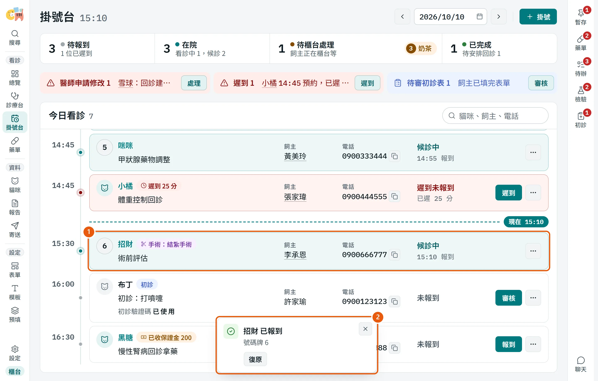
- 1卡片左邊換成號碼牌，狀態變「候診中」。
- 2提示上的 復原：按錯可以立刻撤回。
05看診
醫師在「診療台」。左邊是今天的病患，右邊是正在看的那一隻。
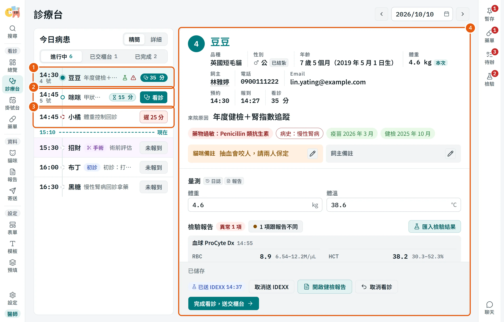
- 1看診中：聽診器圖示＋看了幾分鐘。燒瓶＝IDEXX 檢驗已出；三角形＝有貓咪或飼主備註。
- 2候診中：沙漏＋等了幾分鐘（等超過 20 分鐘變紅），右邊 看診 鈕。
- 3還沒報到；過了預約時間顯示遲到幾分鐘。
- 4看診工作區：貓咪與飼主資料、醫療警示、備註，下面是要填的內容。
- 點一列只是打開來看資料，不算開始看診。要按 看診 才會記下開始看診的時間，這一列才會變成「看診中」。
- 點左欄別隻貓就換過去。換之前系統會先把還沒存的內容存好。
- 隨打隨存：停手一秒多就自動存檔，不用按儲存。
- 寫的內容即時成為這次的病歷日誌，櫃台那邊也立刻看得到。
- 如果另一台電腦同時改了同一個欄位，會跳出提示讓你選要留哪一份。
每個欄位寫完會去哪裡
欄位標題旁的小標記告訴你這一欄寫完會出現在哪裡：
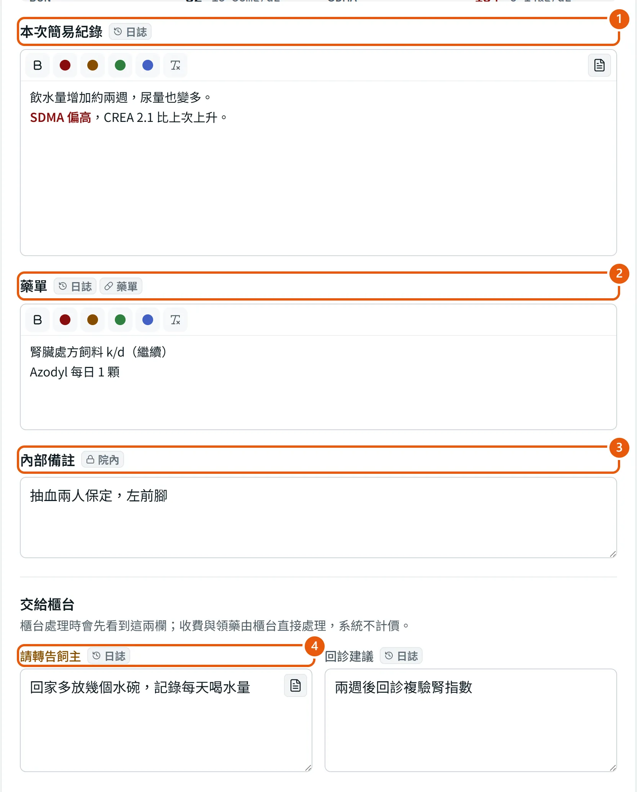
- 1本次簡易紀錄 → 日誌：寫進病歷日誌。飼主看不到，也不會印在健檢報告上。
- 2藥單 → 日誌＋藥單：寫進病歷日誌；送交櫃台那一刻在藥單清單新增一筆「待包藥」。
- 3內部備註 → 院內：只給院內同仁看，不進病歷日誌，也不進健檢報告。
- 4請轉告飼主 → 日誌：櫃台處理視窗最上面會用橘底提醒櫃台轉告。回診建議也一樣進日誌，櫃台約回診時會帶進來院原因。
量測（體重、體溫）標著日誌＋報告：同時出現在病歷日誌與健檢報告。紀錄可以加粗、上紅橙綠藍四色，病歷日誌與清單上都會照樣顯示。
底部的按鈕
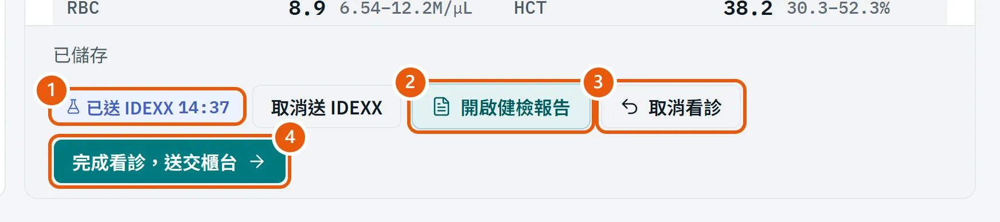
- 1送 IDEXX：把這隻貓送到 IDEXX 主機的待驗清單（見第 11 節）。
- 2開啟健檢報告：開報到時建立的那份草稿。
- 3取消看診：按錯貓、或看到一半飼主離開。退回候診，已經寫的內容都留著。
- 4完成看診，送交櫃台（見下一節）。
06送交櫃台
按 完成看診，送交櫃台。工作區關閉，這隻貓移到左欄「已交櫃台」頁籤。
- 醫師寫了藥單 → 藥單清單新增一筆「待包藥」。醫師自己開的不必再審。
- 掛號台的卡片變成「待櫃台處理」，流程列點名這隻貓，聊天室通知櫃台。
- 號碼牌不收回。
送出去之後還要改
- 櫃台按完成處理之前：醫師在「已交櫃台」頁籤按 取回，就能繼續改。改完再送交一次，藥單會更新同一張（已經包好的會標「需重新包藥」）；把藥單清空＝那張藥單取消。
- 交出去之後，櫃台還能改本次簡易紀錄、內部備註、上傳影像；其他欄位要醫師取回才能改。
- 櫃台已經完成處理：見下一節「完成之後要改」。
07櫃台處理
掛號台按 處理。視窗照跟飼主講話的順序排：① 請轉告飼主、② 本次簡易紀錄、③ 約回診。
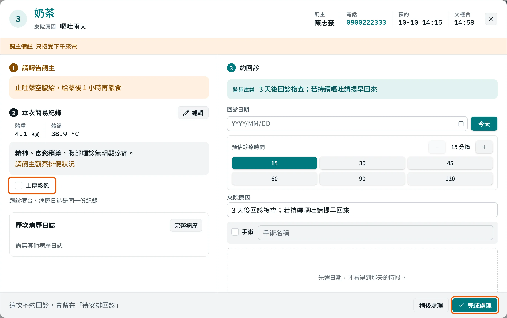
- ① 請轉告飼主：有內容時是橘底，一定要講。
- ② 本次簡易紀錄：看體重、體溫與醫師的紀錄；下面直接展開這隻貓的歷次病歷日誌。
- ③ 約回診：上面是醫師建議。選日期、時段，按 完成處理 時一起約好。
- 稍後處理 只是關掉視窗，什麼都不改。
- 勾「上傳影像」：馬上新增一筆待辦「上傳影像 #貓咪名」，病歷日誌多一列「上傳影像：是」。那筆待辦被完成時，日誌改成「已完成」加完成時間。取消勾選會把還沒完成的待辦收掉，日誌改成「否」。
- 約回診：同時建立下一筆掛號（回診）。之後要改時段，在已約好的回診上按 修改。這筆回診被取消或刪掉時，這次看診會回到「待安排回診」，可以重新約。保證金規則跟一般掛號一樣。
- 完成處理：收回號碼牌，這次看診結束並鎖定，聊天室通知。
完成之後要改
- 櫃台 自己發現按錯：在視窗底部按 退回處理中，就能繼續改。
- 醫師 要改：在已完成的工作區按 申請修改 並寫原因 → 掛號台警示列出現「醫師申請修改」→ 櫃台 在處理視窗按 核准修改 → 醫師在「已交櫃台」按 取回。
- 只是事後更正紀錄內容（例如體重打錯），直接到病歷日誌按 修改 就好，不必退回（見第 9 節）。
08取消報到、取消掛號、未到
都在掛號台卡片的 ⋯ 選單。已報到的卡片有 取消報到；還沒報到的卡片有 取消掛號 與 標記未到。已報到的要取消掛號，先取消報到。
| 取消報到 | 取消掛號 | 標記未到 | |
|---|---|---|---|
| 用在 | 報到按錯，或報到後飼主說要改天 | 飼主說不來了 | 飼主沒出現 |
| 報到時產生的東西 | 系統自動 一起收掉：號碼牌收回、這次的病歷日誌拿掉、送 IDEXX 撤掉、醫師開的藥單還沒領走就取消、「上傳影像」待辦還沒完成就收掉。 寫過的內容都留在掛號上：重新報到後日誌自動回來、待辦自動補回、號碼牌發一張新的。 | 還沒報到，沒有這些東西 | |
| 連到這次看診的 IDEXX 結果 | 留著，重新報到後照樣在 | 系統自動 回到工具欄「檢驗」的待確認清單 | |
| 回診 | 不影響 | 如果這筆是某次看診約的回診，那次看診回到「待安排回診」，可以重新約 | 不影響 |
| 出席紀錄 | 不留紀錄 | 列出來（取消時間、原因），不算次數 | 算一次未到（會影響保證金） |
| 已收保證金 | 不影響 | 要選 先留著，下次沿用 或 已退還 | 不問 |
| 之後 | 回到待報到，可以再報到 | 可以 恢復 成待報到，也可以永久刪除 | |
初診還在等飼主填初診表的卡片沒有「標記未到」，要不來就取消掛號。
09病歷日誌
貓咪頁的第一個頁籤，也出現在診療台右邊、櫃台處理視窗下方、暫存區的病歷速覽。日誌有四種：
| 種類 | 怎麼來的 | 什麼時候出現、消失 | 能不能改、刪 |
|---|---|---|---|
| 看診紀錄 | 系統自動 由這次看診組成 | 報到後、有寫內容就出現（只有來院原因時，要醫師按「看診」才算）。取消報到、取消掛號就拿掉 | 可以改（＝改看診本身），不能刪 |
| 領藥紀錄 | 系統自動 由櫃台登記的藥單組成 | 醫師確認過才出現；藥單取消就拿掉 | 可以改（＝改藥單），不能刪 |
| 記事 | 在日誌頁籤最上面隨手記一筆 | — | 可以改、可以刪 |
| 舊系統匯入 | 舊系統的病歷全文，整段一筆 | — | 可以改、可以刪 |
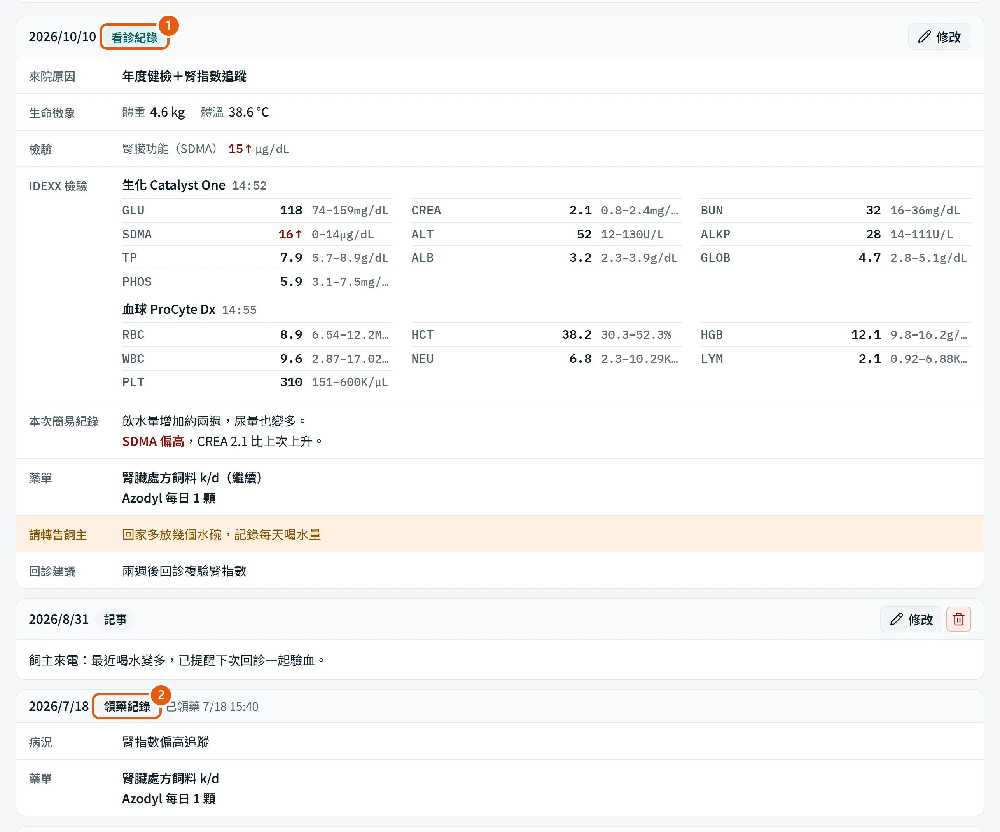
- 1看診紀錄：來院原因、量測、檢驗、IDEXX 原始結果（一台儀器一段）、本次簡易紀錄、藥單、請轉告飼主、回診建議。
- 2領藥紀錄：病況、藥單、備註，以及現在進行到哪一步。
看診紀錄是「讀出來」的，不是存一份副本
- 每次打開都是這次看診最新的內容。醫師在診療台改、櫃台在處理視窗改，日誌都立刻跟著變。
- 在日誌按 修改 改來院原因、體重、體溫、本次簡易紀錄、請轉告飼主、回診建議，就是改回這次看診。櫃台完成處理之後也能改，日誌就是事後更正紀錄的地方。
- 修改模式裡，IDEXX 的數值可以逐項改（原始值會保留，旁邊有還原鈕），或把整份結果移除（回到「檢驗」待確認清單）。
- 內部備註不會出現在日誌裡。
- 醫師在診療台開的藥單，內容就在那次的看診紀錄裡，不會另外再出現一筆領藥紀錄。
領藥紀錄
- 櫃台登記的藥單，醫師確認之前不會出現在病歷上（病歷只記醫師確認過的內容）。確認之後就一直在，之後被退回或修改也不會消失。
- 從日誌改藥單內容會寫回藥單；如果那張藥單還在流程中，會退回「待醫師確認」（避免櫃台交出舊的藥）。
10健檢報告與寄送
草稿：報到時就建好了
報到時用掛號選的表單建立草稿，並帶入表單的預設值。醫師從診療台 開啟健檢報告。
- 草稿自動存檔，離開前有未存的內容會提醒。
- 套用預填模板：一鍵帶入一組常用內容（例如「預防針」）；換一組時，上一組帶入而你沒改過的欄位會退回原本的預設值，按錯可以復原。
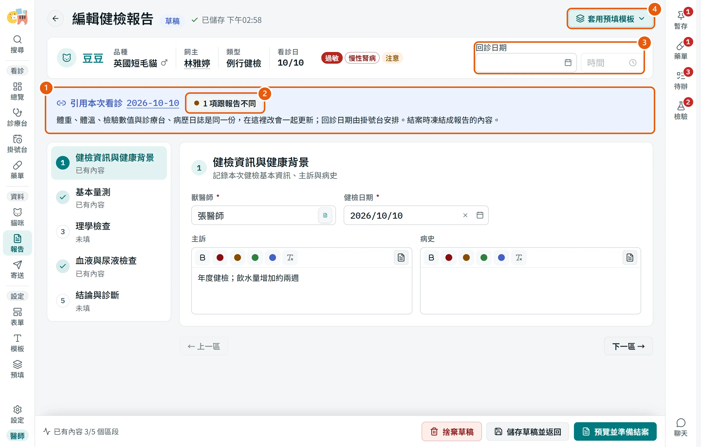
- 1「引用本次看診」：體重、體溫、檢驗數值跟診療台、病歷日誌是同一份，在這裡改，看診與日誌一起變。
- 2IDEXX 填入狀態燈號（見第 11 節）。
- 3回診日期只能看、不能改：它是櫃台約回診時決定的。
- 4套用預填模板。
結案
- 預覽並準備結案 → 預覽頁 確認結案。系統先檢查必填欄位，然後產生 PDF、鎖定這份報告。
- 結案那一刻，系統把看診上的體重、體溫、檢驗數值與當下的表單結構一起凍結進報告。之後改看診、改表單，都不會動到已結案的報告。
- 結案後要更正：建立修訂版。舊版保留，新的一份從草稿開始。
給飼主：分享連結與 Email
- 分享連結預設 30 天有效，可以隨時撤銷。
- 飼主開連結或 PDF 要輸入飼主手機後 6 碼。密碼每次依當下的電話算，改了電話密碼就跟著變；沒有手機號碼的飼主不用密碼。Email 只提示「手機後 6 碼」，不會寫出密碼。
- 寄出前系統會先檢查信箱：格式不對、常見的打錯（例如 gmial.com，會問「是不是 gmail.com？」）、網域不存在，都會擋下來。帳號那一段打錯擋不到。
按寄送 → 郵件伺服器收下了這封信 → 寄送歷程顯示「已寄出」。這只代表伺服器收下，不代表飼主收到。
系統自動 寄出後 45 秒、3 分鐘，以及之後每 5 分鐘，系統會去寄件信箱看有沒有退信。
收件地址不存在時會有退信 → 這次寄送自動改成「寄送失敗」，說明欄寫著原因，報告進「寄送失敗」清單。確認信箱後重寄。
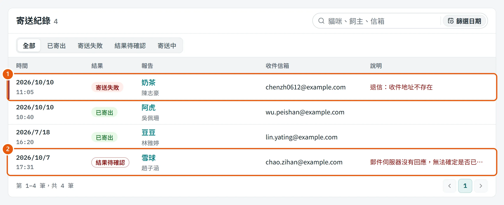
- 1寄送失敗：退信，收件地址不存在。
- 2結果待確認：寄送過程中斷，信可能已經寄出。先問飼主有沒有收到，再決定要不要重寄。
退信要幾十秒到幾分鐘才會回來，畫面不會自己跳，重新整理才看得到。
11IDEXX 檢驗
院內檢驗儀驗完，結果會自動進到系統、自動填進那次看診的檢驗數值（健檢報告草稿讀的就是它）。
檢驗儀驗完 → IDEXX 主機 → 診所那台電腦（IDEXX InterLink 存成檔案）→ 系統。中間由一支小程式每 10 秒上傳一次。
系統自動 認貓：這份結果帶著系統的貓咪編號（從「送 IDEXX」清單點選跑的檢驗才會帶），而且那隻貓檢驗當天有看診，就認得出來。
認得出來 → 依健檢表單上設定的 IDEXX 代號，填進那次看診：空格才填；已經有不同的值不會蓋掉，留給醫師在比對視窗決定；表單沒有的項目不填（全血檢通常比表單項目多，這是正常的）。
認不出來（技術員在主機上手打名字，或那隻貓當天沒看診）→ 進右側工具欄「檢驗」的待確認清單，等人選是哪隻貓。
填入狀態燈號
診療台「檢驗報告」標題旁、健檢報告「引用本次看診」那一條上都有一顆燈，點開看每台儀器的明細。
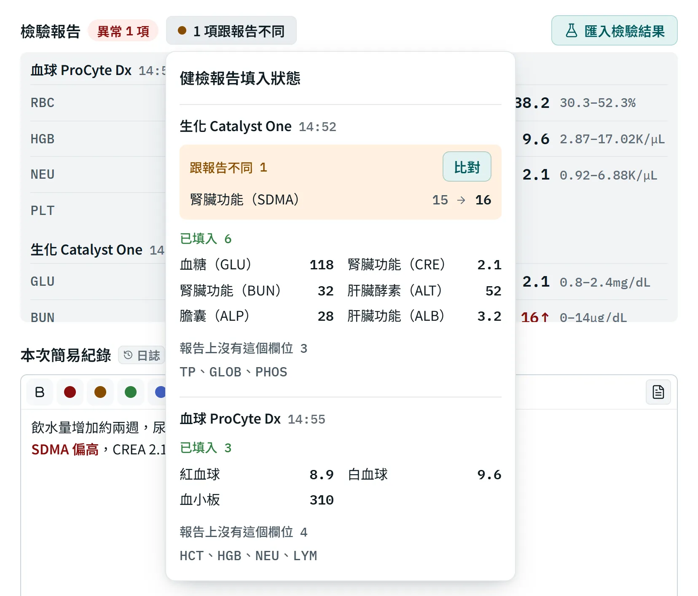
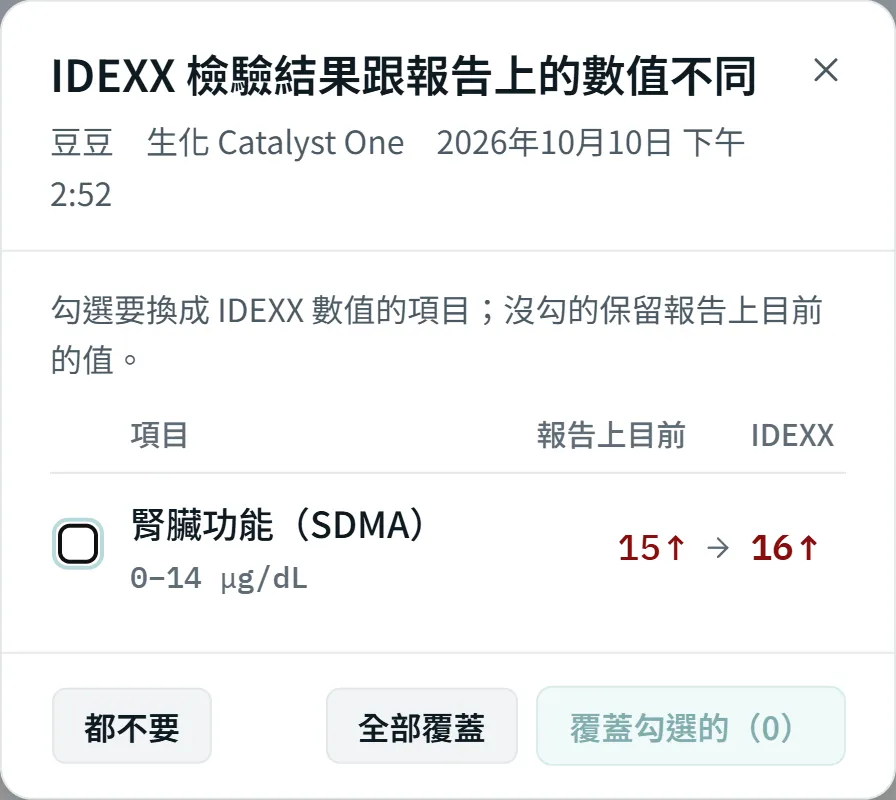
有數值不同時，打開健檢報告草稿會自動跳出比對視窗；工具欄「檢驗」也列在「數值跟報告不同」。哪一邊處理完，另一邊就消失。
認不出貓的結果
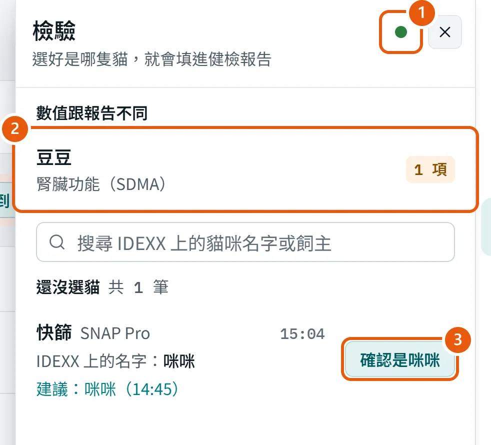
- 1診所那台電腦的燈號：綠＝正常、黃＝連著但上傳卡住、紅＝超過 3 分鐘沒回報（電腦關機或斷線，新的結果進不來）。滑過去看最後回報時間。
- 2數值跟報告不同，點進去比對。
- 3IDEXX 上的名字跟當天某隻貓同名、而且只有一隻：直接按 確認是○○。
- 點一筆可以看數值、從檢驗當天的掛號裡選是哪隻貓。那隻貓當天沒看診就不能選。
- 昨天驗、今天回來看報告這種：在診療台那次看診的「檢驗報告」按 匯入檢驗結果，把結果指定給這次看診。
- 選錯了：提示上的 復原。只清掉還是剛才填進去的值，被人改過的留著。
- 品管測試、練習用的檢驗：忽略。
送 IDEXX
這個功能要診所跟 IDEXX 一起確認後才會打開，沒打開時看不到按鈕。
- 醫師 在看診工作區底部按 送 IDEXX，或 櫃台 在卡片 ⋯ 按（例如術前檢查，一到就知道要驗）。報到不會自動送，因為不是每次看診都驗血。
- 約 10 秒後貓咪出現在 IDEXX 主機的清單。技術員從清單點那隻貓跑檢驗，結果回來就認得出是誰，直接填進看診，不會進待確認清單。
- 徽章「尚未送到 IDEXX」（琥珀色）＝已經按了、但診所電腦還沒寫進主機；變成「已送 IDEXX」才是主機上看得到了。
- 完成處理、取消、取消報到時，系統自動把這隻貓從主機清單撤掉。
12藥單
「藥單」是那張單子；「領藥」只指交給飼主那一步。全頁版在左側導覽 藥單，右側工具欄也有同一套。
待醫師確認
櫃台登記的從這裡開始。醫師 審核 → 確認藥單並送交包藥
待包藥
醫師在診療台開的，送交櫃台時直接到這裡。櫃台 完成包藥
待領藥
飼主來拿時，櫃台 確認領藥
已領藥
結束。之後修改只是更正紀錄
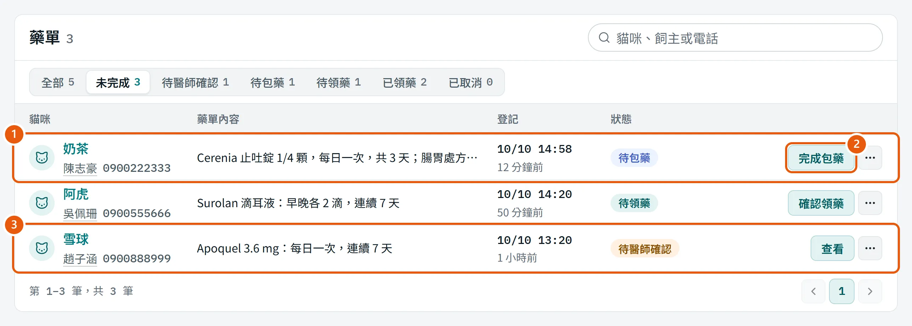
- 1醫師在診療台開的藥單，送交櫃台後直接是「待包藥」。
- 2列上直接 完成包藥，不用點進去。
- 3櫃台登記的（飼主來電續藥），要等醫師確認。
- 櫃台 對藥單有疑問：提出意見 → 送回醫師重審。
- 已經確認過的藥單被修改，會退回「待醫師確認」；如果已經包好（待領藥），會標「需重新包藥」，包藥時要確認舊的藥包已經停用。
- 系統自動 每一次異動都留下當時的內容，事後查得到誰改了什麼。
- 醫師在診療台開的藥單，在藥單這邊修改或取消，會寫回那次看診（取消＝看診上的藥單清空）。
13聊天、暫存區、待辦
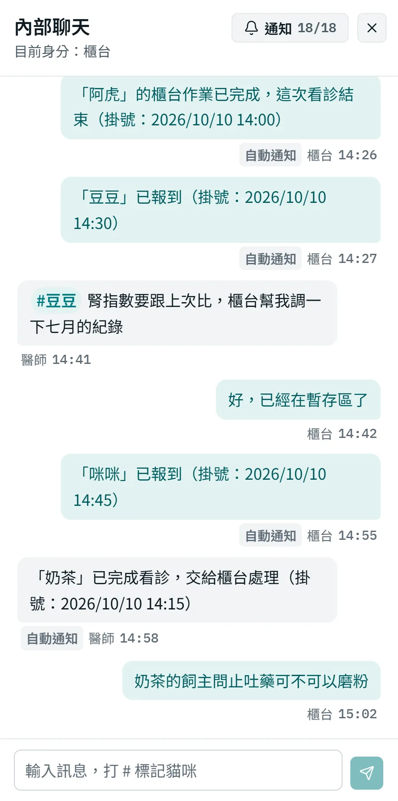
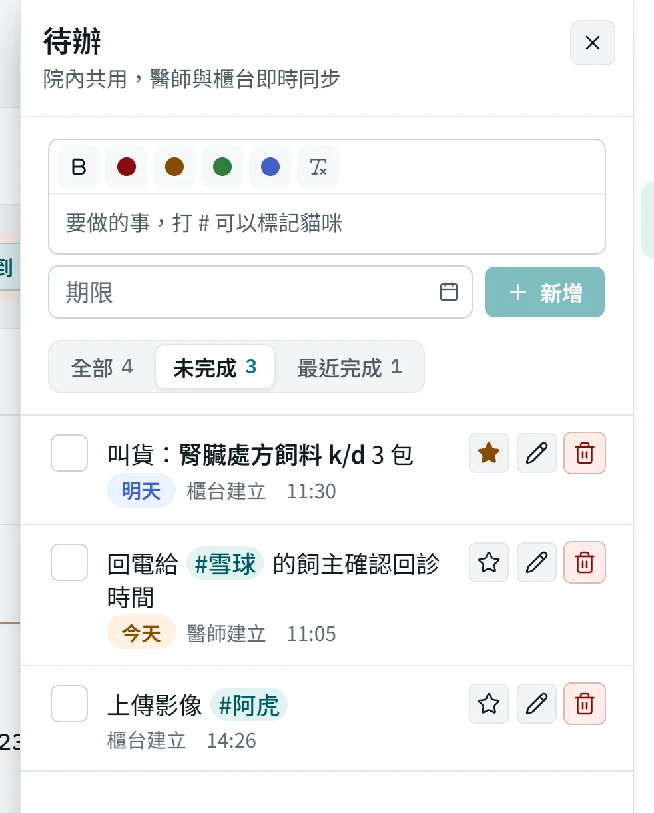
聊天
- 醫師與櫃台的全站聊天，跟哪一隻貓無關也可以聊（例如「今天下午提早關診」）。
- 系統自動 報到、送交櫃台、取回、完成處理、約回診、取消、未到……都會自動發一則通知。每台電腦可以在聊天室的 通知 關掉自己不想發出的幾種。
- 打 # 可以標記貓咪，系統自動 把那隻貓放進暫存區，對方點名字就能看病歷。
暫存區
- 「把這隻貓丟給對方看病歷」的地方。櫃台接電話要問醫生時特別好用。
- 全院共用一份，不會隔天自動清空，看完要手動移除。貓咪頁右上角也可以 加入暫存區。
待辦
- 「明天叫貨」「回電給某某」這類院內雜事，全院共用。打 # 可以標記貓咪（不會放進暫存區）。
- 星號＝置頂；可以設期限。勾起來＝完成，取消勾選＝改回未完成。
- 系統自動 櫃台勾「上傳影像」會新增一筆；完成它，那次看診的病歷日誌會記下完成時間。
14常見問題
病歷日誌裡那次看診不見了？
那次看診被取消報到或取消掛號了。看診沒有成立，日誌會暫時拿掉；寫過的內容還留在掛號上，重新報到後會回來。
為什麼不能取消掛號（或取消報到、標記未到）？
醫師已經開始看診了。請醫師在看診工作區底部按 取消看診，退回候診之後就能取消。
寄出了，飼主卻說沒收到？
先看左側導覽「寄送」：
- 「寄送失敗」＋退信原因：信箱寫錯，跟飼主確認後重寄。
- 「已寄出」：郵件伺服器已經收下，請飼主看看垃圾信件匣。剛寄出的幾分鐘內，重新整理一下，確認有沒有變成寄送失敗。
- 「結果待確認」：可能已經寄出，先問清楚再決定要不要重寄。
IDEXX 驗完了，數值沒有進健檢報告？
- 看「檢驗報告」旁邊的燈號。黃燈：可能是數值跟報告不同（點 比對）、看診沒選健檢表單，或報告已經結案。
- 沒有燈號：結果還沒連到這次看診，到工具欄「檢驗」的待確認清單找，或用 匯入檢驗結果。
- 「檢驗」面板上的電腦燈號是紅的：診所那台電腦沒有回報，結果進不來，請檢查那台電腦有沒有開機、有沒有網路。
號碼牌為什麼跳號？
當天發過的號碼不會再發第二次，避免叫錯人。取消報到後再報到，會拿到一張新的號碼。
藥單怎麼又回到「待醫師確認」？
有人修改了已經確認過的藥單內容（在藥單頁、或從病歷日誌改），需要醫師重新確認。
掛號台和診療台的日期不一樣？
兩頁共用同一個日期：在其中一頁翻到別天，切到另一頁也會停在那一天。從總覽點進去會回到今天。
為什麼某隻貓約診要收保證金？
這隻貓從上次收保證金之後，遲到滿 2 次或未到滿 1 次。在貓咪頁的「出席紀錄」看得到是哪幾次。可以選「這次不收」並寫原因，但下次約診還會再問。
在健檢報告上改了體重，診療台的也變了？
對，它們本來就是同一份資料（見第 1 節）。結案之後，報告上的數值才會固定下來，不再跟著看診變。